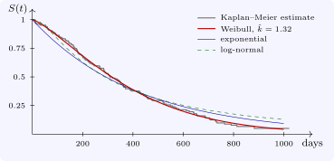

3.4 Choosing a model
The exponential is the Weibull with \(k = 1\), so the two can be compared by a likelihood ratio test: \(2(\ell _{\text {Weibull}} - \ell _{\text {exp}})\) is approximately \(\chi ^2_1\) if \(k = 1\). Non-nested families are compared by the Akaike information criterion \(\text {AIC} = -2\ell + 2p\), with \(p\) the number of parameters; smaller is better. Graphical checks are also useful: for the Weibull, \(\log H(t) = k\log t - k\log \lambda \), so a plot of \(\log (-\log \hat S(t))\) against \(\log t\) from a non-parametric estimate \(\hat S\) should be close to a straight line with slope \(k\); the next section supplies such an estimate.
Example 3.4.1. For lung, the maximised log-likelihoods are \(-1162.3\) (exponential), \(-1153.9\) (Weibull), \(-1169.3\) (log-normal) and \(-1160.9\) (log-logistic). The Weibull has the smallest AIC, \(2311.7\). Its shape is \(\hat k = 1.32\), an increasing hazard, and the likelihood ratio statistic against the exponential is \(17.0\) on one degree of freedom, \(p = 0.00004\): the death rate rises with time since enrolment. The fitted Weibull median is \(316\) days, longer than the exponential’s \(292\) (Figure 3).

Questions on this section
Stuck on something here? Ask below and it stays attached to this topic.